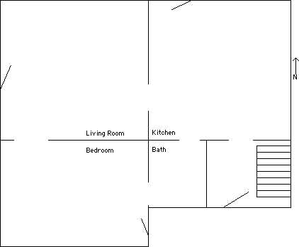
As you come in the side door, look back at the kitchen table.
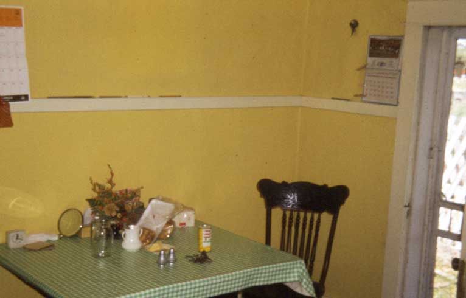
The old refrigerator was on the south wall on the west,
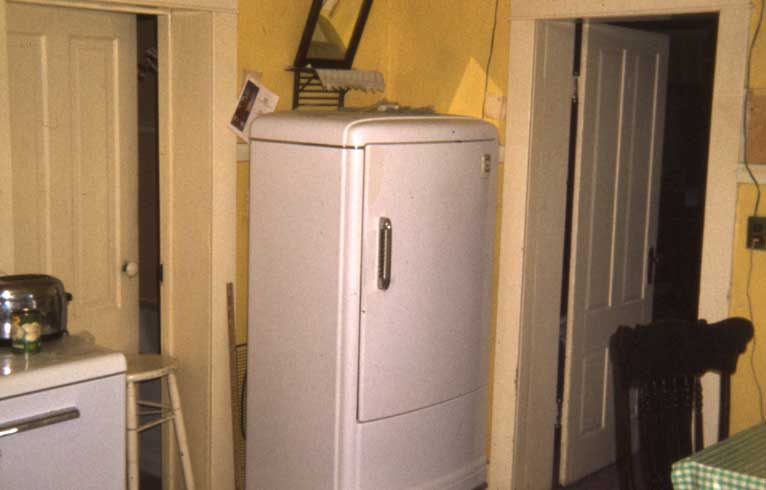
... next to the bathroom door. Go through the bathroom and there is a door into the bedroom.
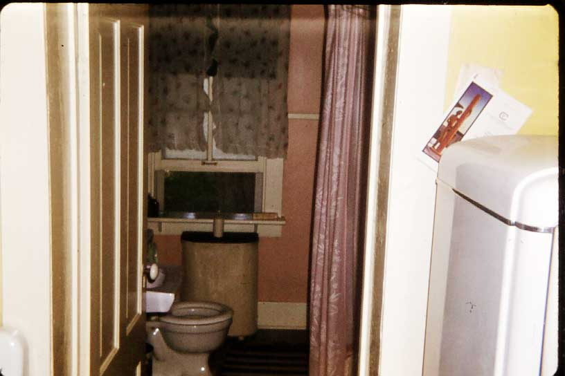
In the bedroom, on the east wall, south of the bathroom door, is a door to the outside (seldom used).
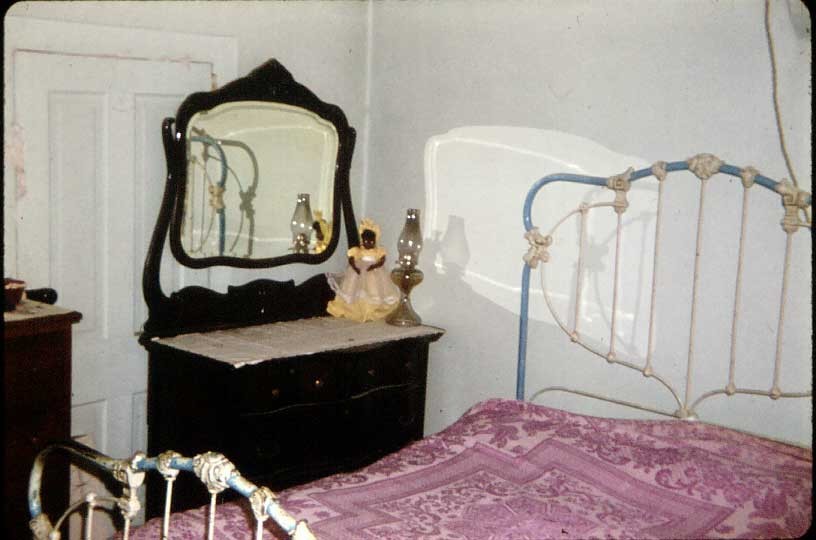
Through the dorway on the north side of the bedroom (west end) you go into the front room.
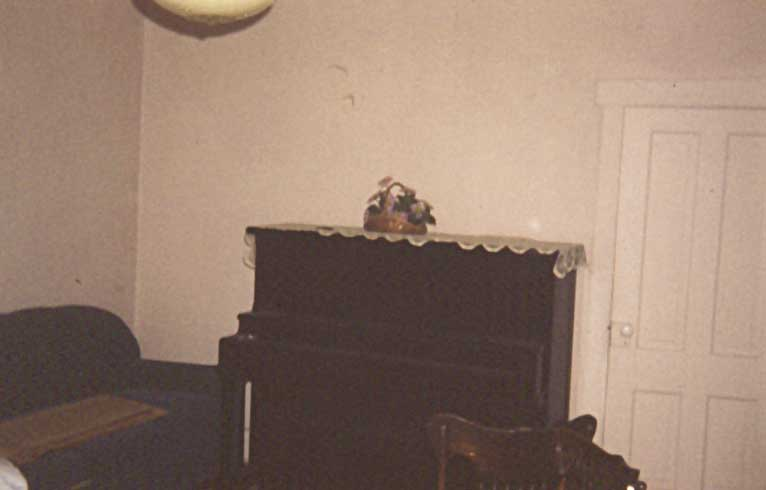
The piano was on the south wall of the front room.
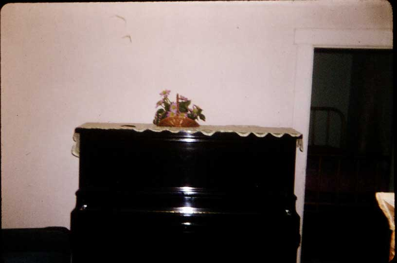
At one time there was a dresser in the front room.
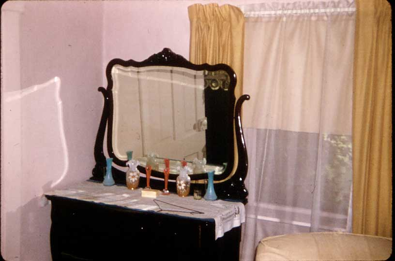
Back into the kitchen from the front room, you see the door on the east end of the south wall, going into the back room and stairs to the basement.
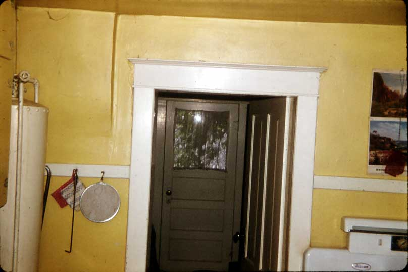
Looking down the stairs into the basement.
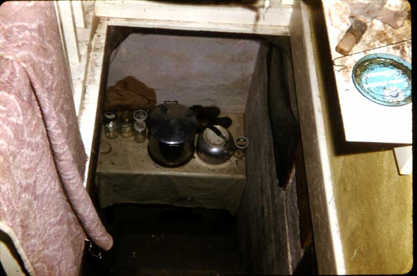
This was a small basement where some food was stored.
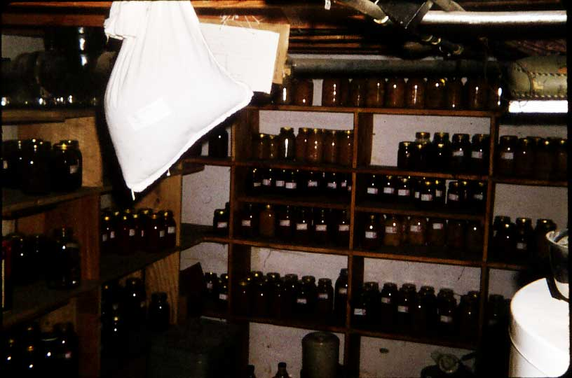
Here are the stairs as seen from within the basement.
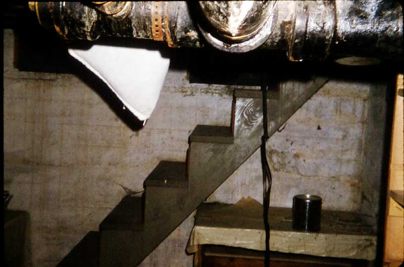
Back to the home and yard.